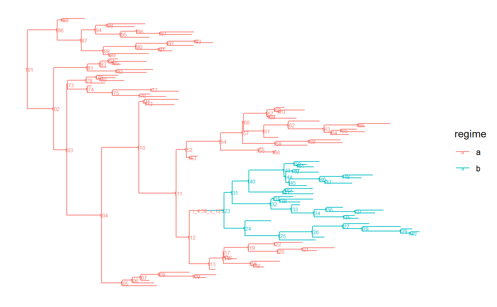

PCMCreateModel.RmdThe PCMBase package is designed as a computational engine to calculate the likelihood for a user specified model evolving on a phylogenetic tree. The package comes with some pre-implemented models, e.g. Brownian Motion or Ornstein-Uhlenbeck, both allowing for multivariate correlated evolution. However, the mathematical theory behind the method for calculating the likelihood (Mitov et al. 2019) is not limited to these two models. In fact any stochastic process that belongs to the so-called GLInv family of models is implementable in PCMBase. From a mathematical perspective one needs to be able to implement functions that calculate the compound parameters \(\vec{\omega}\), \(\mathbf{\Phi}\) and \(\mathbf{V}\). Furthermore, from the implementation side one has to be able to handle the model defining parameters (default values, allowable parametrizations, etc.).
PCMBase’s interface is based on the S3 object system (an excellent introduction by Hadley Wickham is available at http://adv-r.had.co.nz/S3.html). Each implemented model will be an S3 object and below we will describe how users can implement new model classes by themselves.
We will show how to create one’s own model class with the example of Brownian motion with drift. The model is a simple generalization of the Brownian motion model by including a deterministic drift. It is defined by the stochastic differential equation (SDE) \[d\vec{X}(t) = \vec{h} dt + \mathbf{\Sigma}_{x} d W(t),\] where \(W(t)\) is the standard Wiener process, \(\vec{h}\) is a constant \(k\)-dimensional vector and \(\mathbf{\Sigma}_{x}\) is a an upper-triangular matrix with positive diagonal elements. Setting \(\vec{h}=\vec{0}\) reduces the model to a Brownian motion process. The expectation of the process at any time \(t\), given initial value at \(t=0\) is \(E[\vec{X}(t)] = \vec{X}(0)+t\vec{h}\) and the variance is \(Var[\vec{X}(t)] = t\mathbf{\Sigma}_{x}\mathbf{\Sigma}_{x}^{T}\). Here, Based on this we can calculate the the compound parameters \(\vec{\omega}\), \(\mathbf{\Phi}\) and \(\mathbf{V}\) defining the model in the GLInv family (Eq. 30, (Mitov et al. 2019)) \[ \vec{\omega} = \vec{h}t, \] \[ \mathbf{\Phi} = \mathbf{I}, \] \[ \mathbf{V} = \mathbf{\Sigma}_{x}\mathbf{\Sigma}_{x}^{T}t. \] The above equations hold for any internal node without measured trait data. For any tip or internal node with available trait values the variance is given by \[ \mathbf{V} = \mathbf{\Sigma}_{x}\mathbf{\Sigma}_{x}^{T}t + \mathbf{\Sigma}_{e,x}\mathbf{\Sigma}_{e,x}^{T} + \mathbf{S}_{e,i}\mathbf{S}_{e,i}^{T}, \] where \(\mathbf{\Sigma}_{e,x}\) is a regime-specific or global upper triangular matrix parameter with a non-negative diagonal specifying an unknown non-phylogenetic component of the trait variance covariance matrix (e.g. an unknown measurement error), and \(\mathbf{S}_{e,i}\) is a species-specific upper triangular matrix with a non-negative diagonal specifying a known standard error of the measured trait data for each species.
We will now show how to implement the Brownian motion with drift model in a class called “BM_drift that inherits from the”GaussianPCM" and “PCM” classes. It is easiest if one takes an .R file from the PCMBase package that already implements a model class and then modifies it accordingly. We will work here with the BM.R file (that implements the BM model). We need to redefine the generic functions of the “PCM” and “GaussianPCM” classes to suit the Brownian motion with drift model. We remind the reader that the function name is composed of two parts separated by the dot. The first part is the generic function, the second the name of the class in which it is implemented. For example PCMCond.BM_drift is the PCMCond function’s instance in the “BM_drift” class.
PCMParentClasses.BM_drift : function returning the parental classes. of “BM_drift”:PCMParentClasses.BM_drift <- function(model) {
c("GaussianPCM", "PCM")
}PCMDescribe.BM_drift : function returning a custom description of the model.PCMCond.BM_drift : the key function when implementing a new model class. This function returns a list with functions for calculating the \(\vec{\omega}\), \(\mathbf{\Phi}\) and \(\mathbf{V}\) compound parameters that define the conditional distribution of the daughter node given the value of the trait at its parent node (\(\vec{x}_{parent}\). Following (Mitov et al. 2019) we know that in the GLInv family a daughter node conditional on its parent is normally distributed with expectation \(\vec{\omega}+\mathbf{\Phi}\vec{x}_{parent}\) and variance-covariance matrix \(\mathbf{V}\). In particular the \(\vec{\omega}\), \(\mathbf{\Phi}\) and \(\mathbf{V}\) compound parameters can depend on time (i.e. the length of the branch from the parental to the daughter node). In the case of the BM with drift model the \(\vec{\omega}=t\cdot \vec{h}\), \(\mathbf{\Phi}\) is the identity matrix and \(\mathbf{V}\) is the same as in the Brownian motion model (which in itself is a limit of the OU model, hence the reuse of the PCMConcVOU function).PCMCond.BM_drift <- function(
tree, model, r = 1, metaI = PCMInfo(NULL, tree, model, verbose = verbose),
verbose=FALSE) {
Sigma_x <- if(is.Global(model$Sigma_x)){as.matrix(model$Sigma_x)}
else{as.matrix(model$Sigma_x[,, r])}
Sigma <- Sigma_x %*% t(Sigma_x)
if(!is.null(model$Sigmae_x)) {
Sigmae_x <- if(is.Global(model$Sigmae_x)){as.matrix(model$Sigmae_x)}
else{as.matrix(model$Sigmae_x[,,r])}
Sigmae <- Sigmae_x %*% t(Sigmae_x)
} else {
Sigmae <- NULL
}
if(!is.null(model$h_drift)) {
h_drift <- if(is.Global(model$h_drift)) as.vector(model$h_drift) else model$h_drift[, r]
}else{
h_drift <- rep(0,nrow(Sigma_x))
}
V <- PCMCondVOU(matrix(0, nrow(Sigma), ncol(Sigma)), Sigma, Sigmae)
omega <- function(t, edgeIndex, metaI) {
t*h_drift
}
Phi <- function(t, edgeIndex, metaI, e_Ht = NULL) {
diag(nrow(Sigma))
}
list(omega = omega, Phi = Phi, V = V)
}PCMDescribeParameters.BM_drift : a function that returns a list with a custom description of each model parameter.PCMDescribeParameters.BM_drift <- function(model, ...) {
list(
X0 = "trait values at the root",
h_drift = "drift vector modifying the expectation",
Sigma_x = "Upper triangular factor of the unit-time variance rate",
Sigmae_x = "Upper triangular factor of the non-heritable variance
or the variance of the measurement error")
}PCMListParameterizations.BM_drift : a function that returns all possible parametrizations for the implemented model class. These parametrizations correspond to how each parameter defining the model can be parametrized. Probably from the perspective of just calculating the likelihood given some parameters this function does not seem that useful. However, one should not forget that PCMBase is designed to be a computational engine providing the likelihood that will be optimized over some other code. Here, \(\vec{X}(0)\) and \(\vec{h}\) are vectors (i.e. “VectorParameter”). The "_AllEqual" parametrization means all the entries of the vector should be equal. "_Global" means that it is the same for all regimes (notice that \(\vec{X}(0)\) is the value at the root, so it has to be common for all), "_Omitted" means not present (for \(\vec{h}\) this means that the model will correspond to a Brownian motion with \(0\) drift). Finally "_Fixed" means that the parameter is “known”, i.e. it is not to be optimized over. Matrix parametrizations are more involved. For example one will not optimize over a covariance matrix but e.g. over its decomposition as a product of an upper triangular matrix with its transpose. Here we just have the \(\mathbf{\Sigma}_{x}\) and \(\mathbf{\Sigma}_{e,x}\) matrices (however see the “OU” class for more involved cases with the \(H\) matrix). Both of them enter the likelihood (through \(\mathbf{V}\)) as a product of themselves and their transposition i.e. \(\mathbf{\Sigma}_{x}\mathbf{\Sigma}_{x}^{T}\) so decomposition into a triangular matrix (with non-negative diagonal) suffices for unique identification of the matrix. Note that this parametrization guarantees that the matrix \(\mathbf{\Sigma}_{x}\mathbf{\Sigma}_{x}^{T}\) is a symmetric semi- positive-definite matrix. If the diagonal elements of \(\mathbf{\Sigma}_{x}\) are strictly non-zero \(\mathbf{\Sigma}_{x}\mathbf{\Sigma}_{x}^{T}\) will be positive-definite. A detailed description of the different possible parametrizations is given in the The PCMBase Parametrization API guide.PCMListParameterizations.BM_drift <- function(model, ...) {
list(
X0 = list(
c("VectorParameter", "_Global"),
c("VectorParameter", "_Fixed", "_Global"),
c("VectorParameter", "_AllEqual", "_Global"),
c("VectorParameter", "_Omitted")),
h_drift = list(
c("VectorParameter"),
c("VectorParameter", "_Fixed"),
c("VectorParameter", "_AllEqual"),
c("VectorParameter", "_Omitted")),
Sigma_x = list(
c("MatrixParameter", "_UpperTriangularWithDiagonal", "_WithNonNegativeDiagonal"),
c("MatrixParameter", "_Diagonal", "_WithNonNegativeDiagonal"),
c("MatrixParameter", "_ScalarDiagonal", "_WithNonNegativeDiagonal")),
Sigmae_x = list(
c("MatrixParameter", "_UpperTriangularWithDiagonal", "_WithNonNegativeDiagonal"),
c("MatrixParameter", "_Diagonal", "_WithNonNegativeDiagonal"),
c("MatrixParameter", "_ScalarDiagonal", "_WithNonNegativeDiagonal"),
c("MatrixParameter", "_UpperTriangularWithDiagonal", "_WithNonNegativeDiagonal", "_Global"),
c("MatrixParameter", "_Diagonal", "_WithNonNegativeDiagonal", "_Global"),
c("MatrixParameter", "_ScalarDiagonal", "_WithNonNegativeDiagonal", "_Global"),
c("MatrixParameter", "_Omitted"))
)
}PCMListDefaultParameterizations.BM_drift : this function is optional to define but can be useful if only a subset of the parametrizations defined in the PCMListParametrizations function will actually be used in practice.PCMListDefaultParameterizations.BM_drift <- function(model, ...) {
list(
X0 = list(
c("VectorParameter", "_Global"),
c("VectorParameter", "_Omitted")
),
h_drift = list(
c("VectorParameter")),
Sigma_x = list(
c("MatrixParameter", "_UpperTriangularWithDiagonal", "_WithNonNegativeDiagonal"),
c("MatrixParameter", "_Diagonal", "_WithNonNegativeDiagonal"),
c("MatrixParameter", "_ScalarDiagonal", "_WithNonNegativeDiagonal")
),
Sigmae_x = list(
c("MatrixParameter", "_Omitted"))
)
}PCMSpecify.BM_drift : generate default model parameters. Notice that here we obtain a singular model with 0 mean and 0 variance.PCMSpecify.BM_drift <- function(model, ...) {
spec <- list(
X0 = structure(0.0, class = c('VectorParameter', '_Global'),
description = 'trait values at the root'),
h_drift = structure(0.0, class = c('VectorParameter'),
description = 'drift vector modifying the expectation'),
Sigma_x = structure(0.0, class = c('MatrixParameter', '_UpperTriangularWithDiagonal',
'_WithNonNegativeDiagonal'),
description = 'Cholesky factor of the unit-time variance rate'),
Sigmae_x = structure(0.0, class = c('MatrixParameter', '_UpperTriangularWithDiagonal',
'_WithNonNegativeDiagonal'),
description = 'Upper triangular factor of the non-heritable variance
or the variance of the measurement error'))
attributes(spec) <- attributes(model)
if(is.null(names(spec))) names(spec) <- c('X0', 'h_drift', 'Sigma_x', 'Sigmae_x')
if(any(sapply(spec, is.Transformable))) class(spec) <- c(class(spec), '_Transformable')
spec
}Now that we have defined all the code necessary for the class let us demonstrate it. After running all the above code defining the “BM_drift” class we create a model instance. We do this for a two regimes model.
X0 <- c(5, 2, 1) ## root state
## in regime a traits evolve independently
a.Sigma_x <- rbind(c(1.6, 0.0, 0.0),c(0.0, 2.4, 0.0),c(0.0, 0.0, 2.0))
## no jumps at the end of a branch
a.Sigmae_x <- rbind(c(0.0, 0.0, 0.0),c(0.0, 0.0, 0.0),c(0.0, 0.0, 0.0))
a.h_drift<-c(4, 5, 6)
## in regime b evolution is correlated
b.Sigma_x <- rbind(c(1.6, 0.3, 0.3), c(0.0, 0.3, 0.4),c(0.0, 0.0, 2.0))
## no jumps at the end of a branch
b.Sigmae_x <- rbind(c(0.0, 0.0, 0.0),c(0.0, 0.0, 0.0),c(0.0, 0.0, 0.0))
b.h_drift<-c(1, 2, 3)
Sigma_x <- abind(a.Sigma_x, b.Sigma_x, along=3, new.names=list(x=NULL,y=NULL,regime=c('a','b')))
Sigmae_x <- abind(a.Sigmae_x,b.Sigmae_x,along=3,new.names=list(x=NULL,y=NULL,regime=c('a','b')))
h_drift <- abind(a.h_drift, b.h_drift, along=2, new.names=list(xy=NULL, regime=c('a','b')))
PCMBase_model_BM_drift <- PCM("BM_drift", k = 3, regimes = c("a", "b"),
params = list(X0 = X0,h_drift = h_drift[,,drop=FALSE],
Sigma_x = Sigma_x[,,,drop=FALSE],Sigmae_x = Sigmae_x[,,,drop=FALSE]))Now we simulate a random phylogeny using the same example code as in the Getting started guide.
# make results reproducible
set.seed(2, kind = "Mersenne-Twister", normal.kind = "Inversion")
# number of regimes
R <- 2
# number of extant tips
N <- 100
tree.a <- PCMTree(rtree(n=N))
PCMTreeSetLabels(tree.a)
PCMTreeSetPartRegimes(tree.a, part.regime = c(`101` = "a"), setPartition = TRUE)
lstDesc <- PCMTreeListDescendants(tree.a)
splitNode <- names(lstDesc)[which(sapply(lstDesc, length) > N/2 & sapply(lstDesc, length) < 2*N/3)][1]
tree.ab <- PCMTreeInsertSingletons(
tree.a, nodes = as.integer(splitNode),
positions = PCMTreeGetBranchLength(tree.a, as.integer(splitNode))/2)
PCMTreeSetPartRegimes(
tree.ab,
part.regime = structure(c("a", "b"), names = as.character(c(N+1, splitNode))),
setPartition = TRUE)
palette <- PCMColorPalette(2, c("a", "b"))
# Plot the tree with branches colored according to the regimes.
# The following function call works only if the ggtree package is installed,
# which is not on CRAN:
PCMTreePlot(tree.ab) + ggtree::geom_nodelab(size = 2)
We simulate the traits using PCMBase’s functionality.
mData<-PCMSim(tree.ab, PCMBase_model_BM_drift, X0)[,1:N] ## we only want the tip data
## NOTE that observations from different species are in the columns NOT in the rows as
## in other softwareFinally we calculate the likelihood under the BM with drift model.
log_lik<- PCMLik(mData, tree.ab, PCMBase_model_BM_drift)
print(log_lik[1]) ## we just want to print the log-likelihood without the attributes## [1] -564.1958If PCMBase is used as a computational engine for some inference package, then the above code can be one way of obtaining the likelihood under a “GaussianPCM” model object. However, in such a setup it is recommended to use the mechanism of creating a likelihood function for a particular dataset through PCMCreateLikelihood. This will speed up the calculations as it avoids re-creating some internal data objects for the tree every time the likelihood value is required. One just needs to update the parameters to obtain a new likelihood value.
## create an vector of appropriate length to store the vectorized model parameters
v_param <- double(PCMParamCount(PCMBase_model_BM_drift))
# load the current model parameters into param
PCMParamLoadOrStore(PCMBase_model_BM_drift, v_param, offset=0, load=FALSE)## [1] 33print(v_param)## [1] 5.0 2.0 1.0 4.0 5.0 6.0 1.0 2.0 3.0 1.6 0.0 2.4 0.0 0.0 2.0 1.6 0.3 0.3 0.3
## [20] 0.4 2.0 0.0 0.0 0.0 0.0 0.0 0.0 0.0 0.0 0.0 0.0 0.0 0.0## now create a likelihood function for the particular model and observed data
likFun <- PCMCreateLikelihood(mData, tree.ab, PCMBase_model_BM_drift)
log_lik_from_likFun<-likFun(v_param)
print(log_lik_from_likFun[1])## [1] -564.1958print(log_lik_from_likFun[1]==log_lik[1])## [1] TRUE## [1] 4.9864677353 2.0052929611 1.0025535203 3.9961126941 4.9817991543
## [6] 6.0109860596 0.9975467767 1.9800304782 2.9914517602 1.5923279410
## [11] -0.0188153804 2.3946187384 -0.0055007922 0.0087133571 2.0047812326
## [16] 1.6133759775 0.2837280674 0.2993490934 0.2829010447 0.4137024178
## [21] 2.0149764784 0.0012398628 0.0154938482 -0.0119467450 0.0025201278
## [26] -0.0002987859 -0.0184400400 0.0090499337 0.0041054207 0.0028106487
## [31] 0.0025751151 0.0059760489 -0.0174220869# set the new parameter vector
PCMBase_model_BM_drift_2<-PCMBase_model_BM_drift
PCMParamLoadOrStore(PCMBase_model_BM_drift_2, v_param_2, offset = 0, load=TRUE)## [1] 33print(PCMBase_model_BM_drift_2)## Brownian motion model with drift
## S3 class: BM_drift, GaussianPCM, PCM; k=3; p=33; regimes: a, b. Parameters/sub-models:
## X0 (VectorParameter, _Global, numeric; trait values at the root):
## [1] 4.986468 2.005293 1.002554
## h_drift (VectorParameter, matrix; drift vector modyfing the expectation):
## a b
## [1,] 3.996113 0.9975468
## [2,] 4.981799 1.9800305
## [3,] 6.010986 2.9914518
## Sigma_x (MatrixParameter, _UpperTriangularWithDiagonal, _WithNonNegativeDiagonal; Upper triangular factor of the unit-time variance rate):
## , , a
##
## [,1] [,2] [,3]
## [1,] 1.592328 -0.01881538 -0.005500792
## [2,] 0.000000 2.39461874 0.008713357
## [3,] 0.000000 0.00000000 2.004781233
##
## , , b
##
## [,1] [,2] [,3]
## [1,] 1.613376 0.2837281 0.2829010
## [2,] 0.000000 0.2993491 0.4137024
## [3,] 0.000000 0.0000000 2.0149765
##
## Sigmae_x (MatrixParameter, _UpperTriangularWithDiagonal, _WithNonNegativeDiagonal; Upper triangular factor of the non-heritable variance or the variance of the measurement error):
## , , a
##
## [,1] [,2] [,3]
## [1,] 0.001239863 0.01549385 0.0025201278
## [2,] 0.000000000 -0.01194675 -0.0002987859
## [3,] 0.000000000 0.00000000 -0.0184400400
##
## , , b
##
## [,1] [,2] [,3]
## [1,] 0.009049934 0.004105421 0.002575115
## [2,] 0.000000000 0.002810649 0.005976049
## [3,] 0.000000000 0.000000000 -0.017422087
##
## log_lik_from_likFun_2<-likFun(v_param_2)
print(log_lik_from_likFun_2[1])## [1] -564.1626Mitov, Venelin, Krzysztof Bartoszek, Georgios Asimomitis, and Tanja Stadler. 2019. “Fast likelihood calculation for multivariate Gaussian phylogenetic models with shifts.” Theor. Popul. Biol., December. https://doi.org/10.1016/j.tpb.2019.11.005.